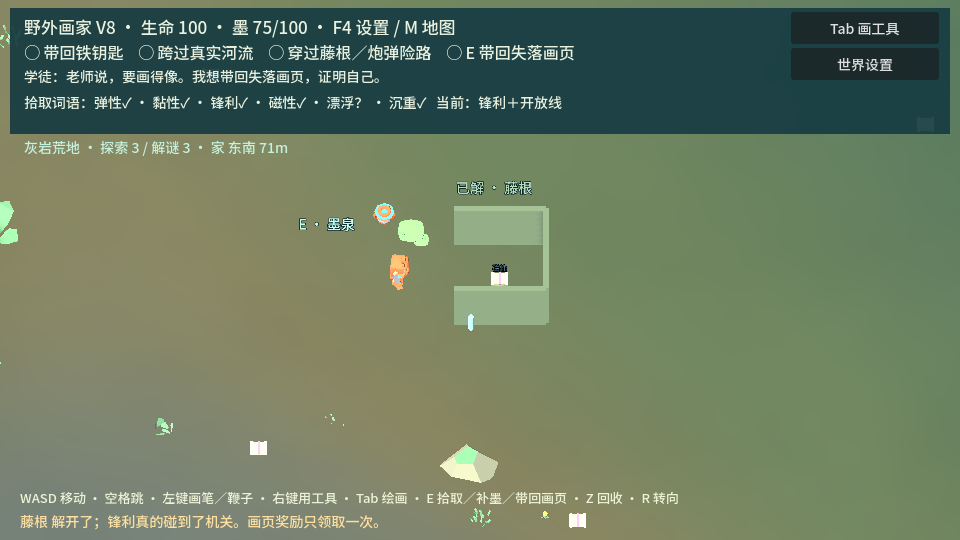
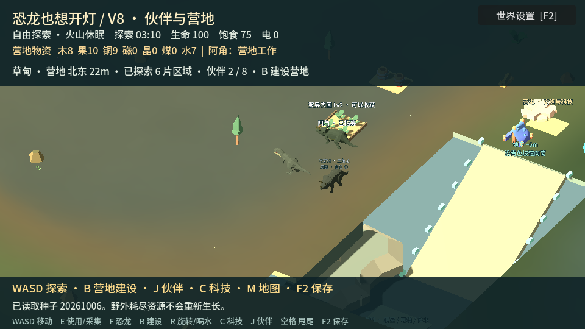

LOW POLY 3D / FIND WORDS · DRAW TOOLS
涂鸦成真
从西侧走入持续生成的旷野，捡到词语，再画工具解开围栏、配重闸与藤根。磁性鞭子能拉铁杆，沉重轮廓能压配重；机关旁有补墨处，解过的路与领过的画页会被记住。
捡一个字，画一条自己的路WASD 移动 · Tab 画图 · 右键使用 · E 补墨 · Z 回收 · M 地图 · F4 设置 / 保存
把捡到的字变成工具。把现代记忆变成恐龙的文明。两款 V8，走进更自然的林地，建立自己的恐龙营地。

从西侧走入持续生成的旷野，捡到词语，再画工具解开围栏、配重闸与藤根。磁性鞭子能拉铁杆，沉重轮廓能压配重；机关旁有补墨处，解过的路与领过的画页会被记住。
捡一个字，画一条自己的路WASD 移动 · Tab 画图 · 右键使用 · E 补墨 · Z 回收 · M 地图 · F4 设置 / 保存

认识野外的恐龙，投喂交朋友，雇佣不同物种采集、搬运与守卫。自由摆放营地设施，让伙伴工作、升级和扩建。现代科技与火山挑战继续保留：飞船升空，或搬到地下。
带着现代记忆，创造史前的未来WASD 移动 · E 使用 · F 交友 · B 建造 · R 旋转 · J 伙伴 · F2 保存
Low Poly 3D 可玩版 V8 · 预览为游戏实机截图。不用操作，直接看新录像。模型使用 Kenney 与 Quaternius 的 CC0 素材。